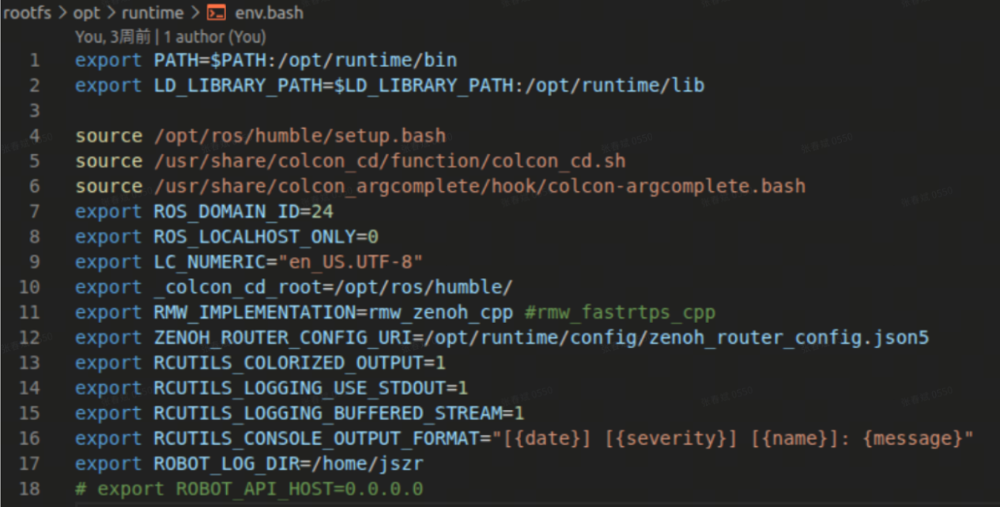
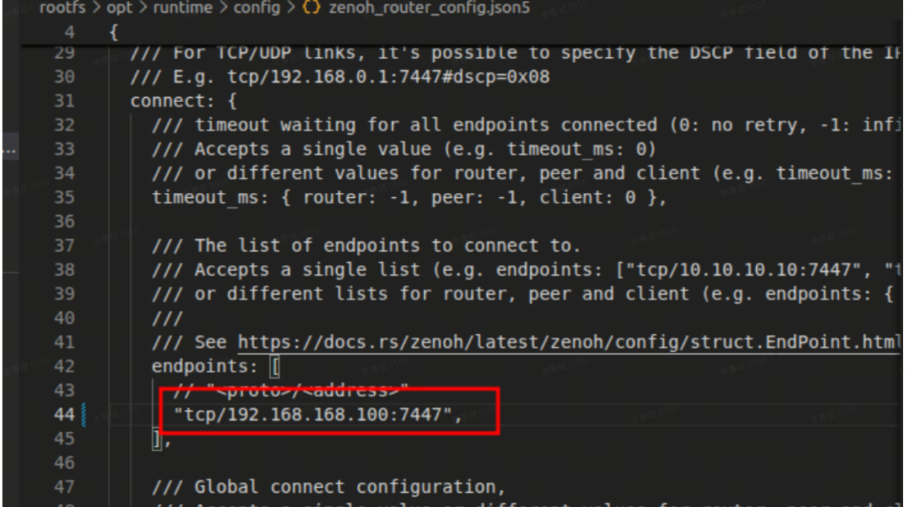

5.3 ROS2多机通信配置
NX系统中有统一配置的环境变量：/opt/runtime/env.bash, 这个变量在.bashrc中会默认导入

由上图可见，ROS_DOMAIN_ID=24 ，目前机器狗使用 ros2 的 zenoh 中间件对外提供 ros2 topic 服务，需要用户在自己的笔记本安装相关环境。
IP配置
配置用户笔记本 ip 为：192.168.168.xxx（xxx不能为100或者168或者255）用户笔记本环境配置
Ubuntu22.04
Ros2 humble
Zenoh rmw
安装zenoh
sudo apt-get install ros-humble-rmw-zenoh-cpp
修改配置文件
使用编辑器打开下面文件/opt/ros/humble/share/rmw_zenoh_cpp/config/DEFAULT_RMW_ZENOH_ROUTER_CONFIG.json5找到connect/endpoints字段，将机器狗NX的IP写入并保存:"tcp/192.168.168.100:7447"

在pc端新建终端1，设置中间件切换的环境变量以及 ROS2 的 Domain ID
source /opt/ros/humble/setup.bash
export ROS_DOMAIN_ID=24
export RMW_IMPLEMENTATION=rmw_zenoh_cpp
ros2 run rmw_zenoh_cpp rmw_zenohd
重置 ROS2 后台守护进程
ros2 daemon stop
ros2 daemon start
在上述的环境变量生效的前提下即可使用 rviz 可视化，录包，或者启动自己的 ros2 程序与狗中的驱动交互。